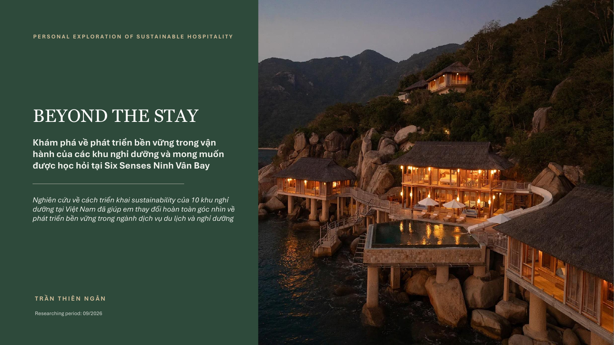

How is sustainability actually practiced across resorts in Vietnam?Phát triển bền vững thực sự được đưa vào vận hành tại các khu nghỉ dưỡng ở Việt Nam như thế nào?
Not “which resort is most sustainable?” — but what is being done, how deeply it is integrated, and how well the public evidence supports it.Tôi không cố tìm “resort nào bền vững nhất”. Tôi muốn biết các resort đang làm gì, những hoạt động đó đi vào vận hành sâu đến đâu, và thông tin công khai chứng minh được đến mức nào.
The PDF is the exact file provided for this portfolio; it is not converted or re-created.PDF này là đúng file gốc được dùng cho portfolio, không qua chuyển đổi hay dựng lại định dạng.
What the comparison changed in my thinkingViệc so sánh này đã thay đổi cách tôi nhìn về phát triển bền vững
The final dataset separates sustainability content from the quality of evidence and from the stage of progress. This made it possible to distinguish a described practice from a quantified output or a demonstrated change.Bộ dữ liệu cuối cùng tách riêng ba lớp: nội dung phát triển bền vững, chất lượng bằng chứng và giai đoạn tiến triển. Nhờ vậy, tôi có thể phân biệt rõ một hoạt động mới được mô tả, một đầu ra đã được định lượng và một thay đổi thực sự đã được chứng minh.